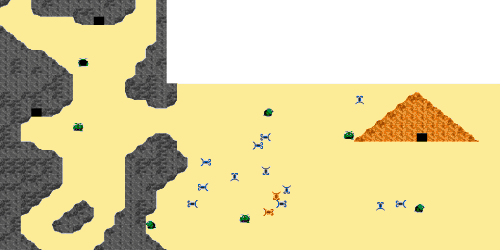
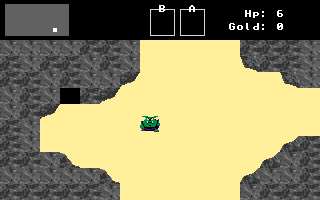
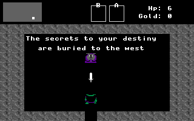
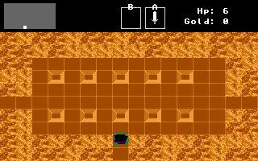

![[Shop]](shopscreen.gif) North of the starting screen there is another cave. This cave serves as
a merchant's shop. Here you can purchase items to aid you in your
adventure.
North of the starting screen there is another cave. This cave serves as
a merchant's shop. Here you can purchase items to aid you in your
adventure.
![[Troll Bridge]](title.gif)
Adventure Begins

The above map shows a small section of the surface world. The hero begins in the middle of the left side.
|  At the start, your troll has been running from Granak's men. He has no equipment. After three days of travel the cave looks like a good place to rest. |
|  Within the cave awaits an old gray troll. Gray trolls are rare and often avoid other trolls. He offers you a sword. "The secrets to your destiny are buried to the west," repeats the old troll. |
|  Following the advice of the gray troll, you head out into the desert. After walking some distance and fighting some scorzions, you discover an immense pyramid. Ignoring the fear rising within you, you enter the pyramid. |
|
North of the starting screen there is another cave. This cave serves as
a merchant's shop. Here you can purchase items to aid you in your
adventure.
|